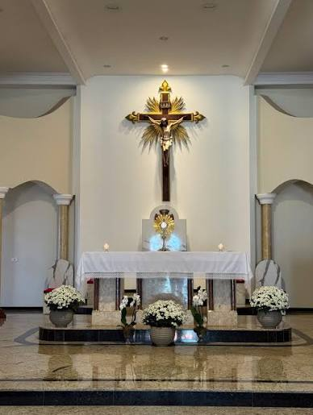
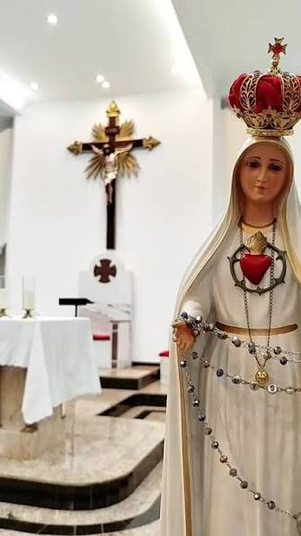

O que nos move
1
Celebrar
Missas na matriz e nas capelas, e os sacramentos, que reúnem a comunidade em oração.
2
Conviver
Pastorais e grupos que fortalecem a vida comunitária. A PASCOM mantém todos informados pelas redes sociais.
3
Servir
Ações sociais e arrecadação de alimentos para famílias em necessidade, em especial na Campanha da Fraternidade.
Conheça a nossa igreja

Uma casa de oração aberta a todos
Para celebrar a Eucaristia, participar de nossas pastorais ou encontrar um momento de oração e paz, as nossas portas estarão sempre abertas para receber você e sua família.
